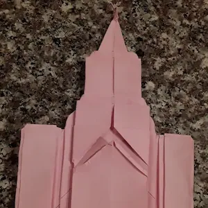
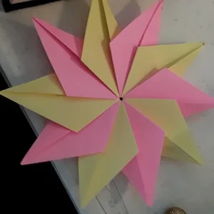
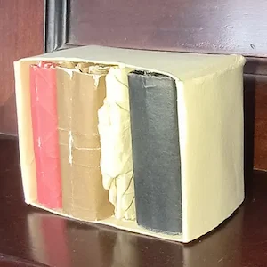

Origami Learning Page
Please click on the arrows below to learn about origami:
What is Origami?


Origami Fun Facts
- The word Origami is a Japanese term made from two words: "oru" (to fold) and "kami" (paper).1
- Origami in Japan and China has dated back about 1000 years. One early reference about origami comes from a 1680 poem that mentions butterfly origami.2
- Paper folding was originally used to make decorations and tools for ceremonial and religious purposes. Overtime it evolved into meaningful decorations and gift wrapping. Origami also evolved into a form of recreation. Only recreational origami is considered origami.2
- Akira Yoshizawa, who created many origami designs and books, standardized a set of symbols for documenting and folding origami models.2
- Origami is more than just art. Origami plays a big part in engineering and geometry as well. NASA and technology companies use origami in designs such as robots and solar panels/sails to allow more maneuverability and usability.3
What Kinds of Origami are there?


Origami Types and Styles4
Traditional

A single sheet of paper is used without tape, cutting, or ripping, only folding. For example, a flower.
Modular

Multiple origami pieces are interlocked to create a larger model, such as a cube.
Action
These models are designed to be moved, like a folding pocket knife, a jaw, a bird that flaps wings when the tail is pulled, or even models that spin.
Golden Venture or 3D Origami
Triangle units that can be interlocked to create complex models, often out of hundreds or even thousands of units.
Wet Folding
A style of origami that includes shaping paper when wet to create more natural curves or edges, such as a ghost or curled leaves.
Strip Folding
Long pieces of paper, sometimes several, folded to create a variety of items, including weaving or interlocking pieces.
Tessellations
A piece of paper folded repeatedly to create patterns such as scales or other repeating shapes.
Do I need special paper?

Origami Paper
The art of paper folding is what origami is about. However, don't let that limit what you fold! NASA uses origami for solar sails. Those aren't exactly made paper! And as you may have seen in the pictures on this website, the paper isn't exactly the same kind for all of the models folded. I have used printer paper of several colors, notebook paper, cardstock, newspaper, napkins, wrapping paper, tinfoil, and even cardboard to fold origami.
With that being said, each material has benefits and drawbacks: Cardboard is very thick, but can be good for giant models that hold their shape. Tinfoil looks great and holds its shape well, but it is fragile. Notebook paper doesn't exactly look the best all the time.
If you want quality material to make your origami, people do sell paper designed for origami of a variety of types. Some have durability to endure a lot of folding. Some origami paper has color on one or both sides. Some are designed for wet folding. Most origami paper is sold as square sheets of several sizes. On our store you can check out some origami paper to use in your next project!
Purchase paper to get folding!What do I fold?


Origami models
Basically, anything! Origami is a very versitile art. A fish, cactus, flower, or book. A tessellation, isododecahedron, squiggle, or minecraft Steve. You name it! It could probably be folded out of paper.
But to get you started, check out our store for some books or models that might interest you!
Find some designs to get folding!